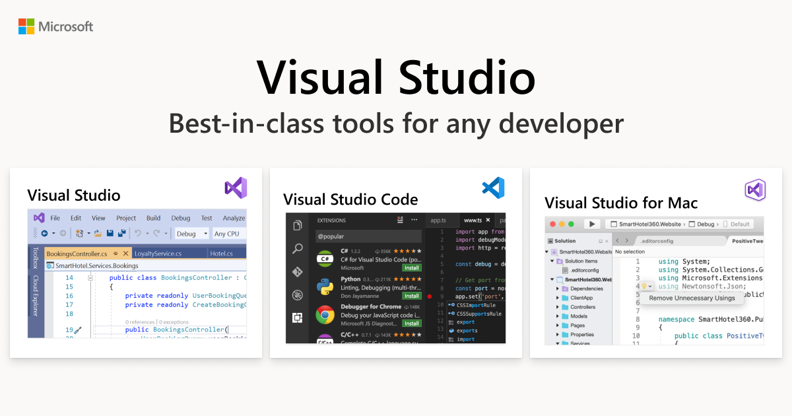

Mar 16
The Focus on Developer Tools Engineering

Software engineers and developers have been writing code in a crappy way at the beginning of the personal computer revolution that led to the growing number of people interested in software engineering and the increasing rate of production of software for enterprises and consumers. Decades after theories, frameworks, and best practices about software engineering and development have been created by experts, open sources contributors, and teams of engineers and developers from interesting big and small tech companies. But along the way we took this user and customer-centric approach that made software engineers and developers forget themselves and be more about solving the pain of those for who the technical solution that they are building is for what is a very good approach that had a side effect of leaving us with less and fewer solutions for making our works clever, better and faster. We ended up building for ourselves tools less and less and were more running chipping things faster and getting more users and market shares. More users and more market shares are for sure two key critical parameters that make a tech company successful but with software engineers and developers who are doing their jobs with fewer hurdles, fewer repetitive tasks, less code to write, and fewer bugs to go after it is more likely for these software engineers and developers to chip more tech products.
Given this opinion, nocode gets another meaning which is not about only helping non-techy people to be able to develop software but also enabling software engineers and developers to do more meaningful and creative works than writing lines of codes. The alone software engineer and developers as well as any size of software development teams seek to be more productive at turning creative ideas into software that ease the work of a set of dedicated users but they have no time to improve their productivity because we all know that users are more and more demanding and the software competitive market is harder and harder with teams of people chipping more and more solutions what lead to the allocation of the whole engineering effort to producing and chipping software for users than software for making their engineering journey more efficient and productive.
Of course, it is very tempting to jump on this interesting opportunity of developing software for others and offering these solutions as SaaS or any other model of software commercialization but the world will just be better with more productive software engineers and developers that’s why I am actually advocating and even trying myself to focus on building tools that achieve this goal of making software engineering and operating easier for professional software engineers and developers like you and I am sure that you can come up with great ideas about a tool that could make us better and happier software engineers and developers.
Then it will help to know how software products are engineered at tech companies of any size from big tech companies like Microsoft, Apple, Google, Amazon, and others to this alone developer working in a small room as office here this small African country. There are so many software project management tools and frameworks like agile and others but what this article is about is tools that ease the implementation of such kind of frameworks and best practices for the goal of giving the software engineer and developer more time for doing creative works that could have a big impact on the growth of the company for which they are working and could make their jobs happier and funnier.
This is not about skipping users and customers and focusing on ourselves but about taking the right proportion of time and effort to spend producing software for others and tools for us, software engineers and developers mine is actually 100% spend on Engineering developer tools.